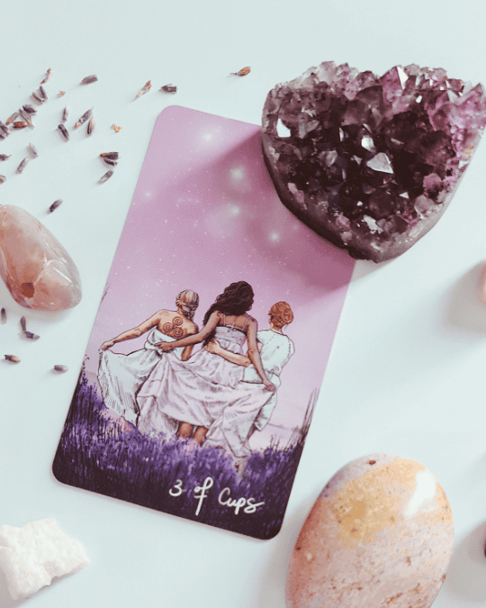

Serviços
Tarot
Leituras de tarot para orientação e autoconhecimento.

Alinhamento energético
Harmonização de chakras e liberação de bloqueios para um fluxo vital mais leve.

Florais da Lua
Essências vibracionais inspiradas nos ciclos lunares para apoiar emoções e novos começos
"A Pri é uma profissional incrível! Sua leitura de tarot me trouxe clareza e paz em um momento difícil. Recomendo a todos que buscam autoconhecimento."
- Andrea
Pronta para iniciar sua jornada de autoconhecimento?
Clique no botão aqui e nos falamos!